Table of Contents
This will show how to install the free Microsoft Visual C++ Express as an alternative to the full Microsoft Visual C++. It provides the majority of the same command line compiler tools as the full version.
The installation and setup of the Microsoft Visual C++ Express consists of these main steps:
- Dowloading the Microsoft Visual C++ Express files (free download)
- Installing the Microsoft Visual C++ Express
Installing the Platform SDK
![[Note]](../images/admon/note.gif)
Note Microsoft Platform SDK is required to compile UDFs. For UDFs there are some dependencies with the Microsoft Platform SDK (include files and libraries). For SQL modules parsing/compilation the base Visual C++ Express is sufficient.
- Configuring the Microsoft Visual C++ Express
You need to download and install the necessary software packages. The links and versions are as of 09-Jan-2005.
Use the following link to download Microsoft Visual C++ Express version 2005:
http://msdn.microsoft.com/vstudio/express/downloads/default.aspx
Note Visual C++ Express can also be downloaded as an ISO CD image (463 MB) from the MSDN subscriber download site if you have a MSDN account. The download via the above link is very slow. The download size for the above link which is approximately 68 MB took several hours to download compared to less than an hour for the ISO MSDN download. Click on the "Go!" button beside the Visual C++ 2005 Express Edition language selection.
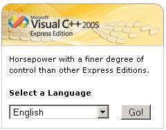From the link above there should be a link to download the latest Microsoft Visual C++ Express version 2005 Service Pack. The following link is Visual C++ Express SP1:
Note The above download link is extremely slow (over an hour for 43.5 MB) but I could only find a 4454 MB "Visual Studio 2005 Service Pack 1 - DVD (Multilanguage) " on the MSDN Subscriber downloads. For the Windows Platform SDK you have several download links available:
Note The above download links are extremely slow and the Platform SDK can also be downloaded as an ISO CD image (409 MB) from the MSDN subscriber download site if you have a MSDN account at a substantianlly faster speed.
Ensure that you've uninstalled any already installed Visual C++. These instructions are based on the Visual C++ Express downloaded installer vs the CD installer.
Launch the VCSetup.exe setup file and click "Next".
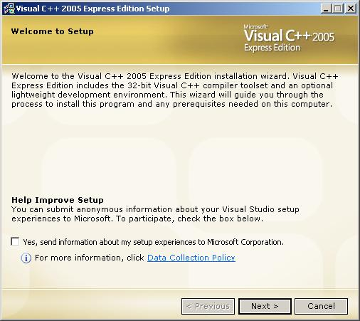Read the license agreement, select "I accept the agreement" and click "Next".
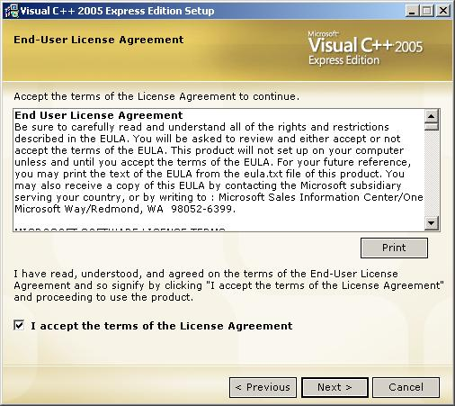Select the "Graphical IDE" option and click "Next".
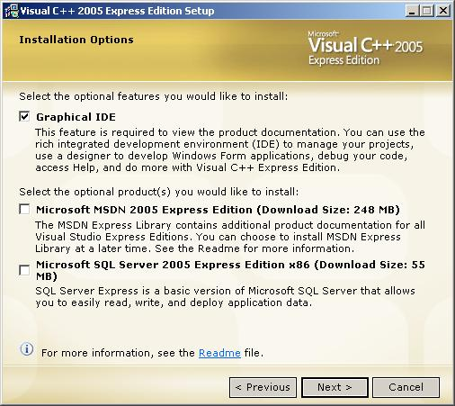Change the install directory shown above to "C:\VS8" as shown below and click "Install":
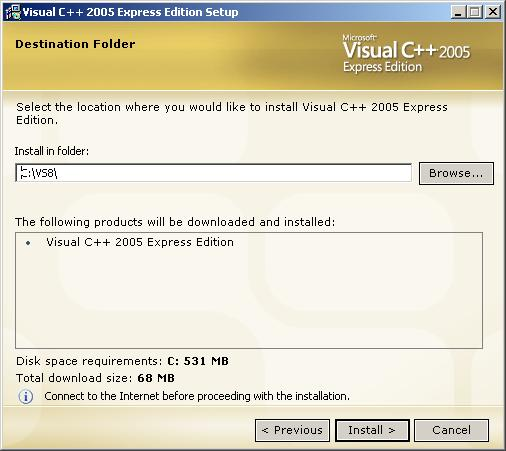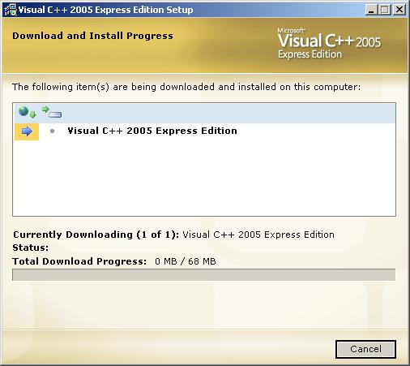Click "Register Now" link and follow the instructions to register. Once the registration process is started you can close this installer window by clicking "Exit".
Note If you do a repair or reinstall via the "Add or Remove Programs" control panel you will need to register again and it will be most likely a different registration code as the original registration code will not work.
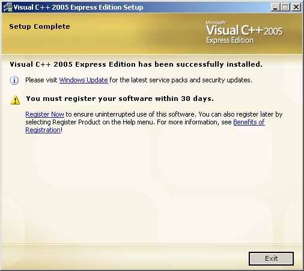This completes the basic Visual C++ Express installation.
Launch the Visuall C++ Express service pack installer
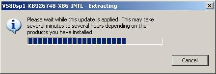Click "OK".
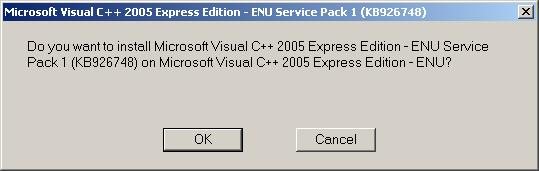Read the license agreement and click "I accept".
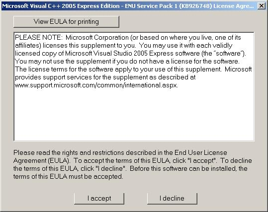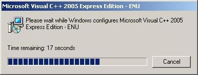Click "OK".
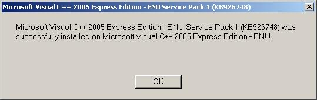
Launch the "Windows Platform SDK" installer and click "Next". These instructions are based on the CD version of the "Windows 2003 Platform SDK R2".
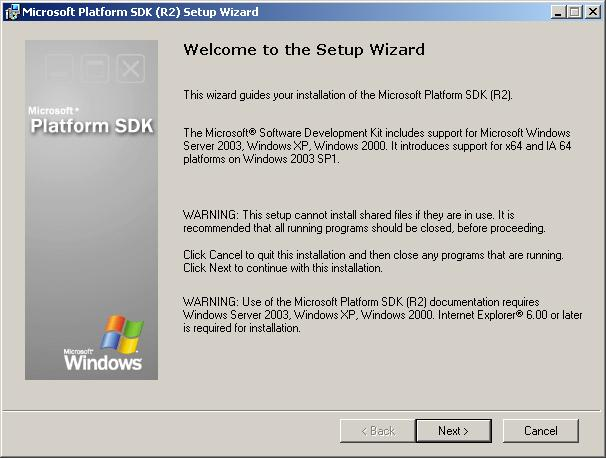Read the license agreement, select "I agree" and click "Next".
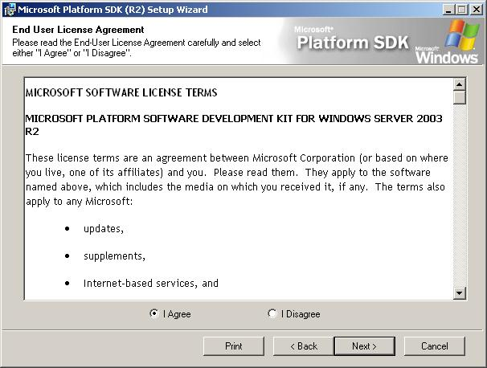Select "Custom" and click "Next".
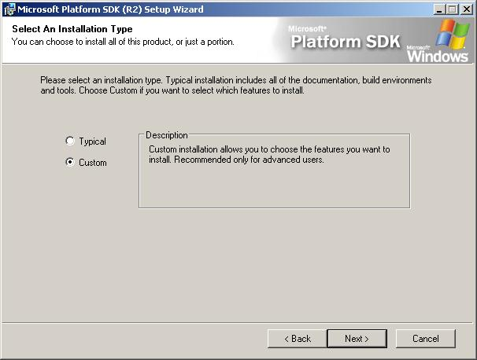Specify
C:\VS8\VC\PlatformSDK\for the installation path and click "Next".Note Using this exact path will take simplify the configuration of VC++ to use the Platform SDK as this path is preconfigured within VC++.
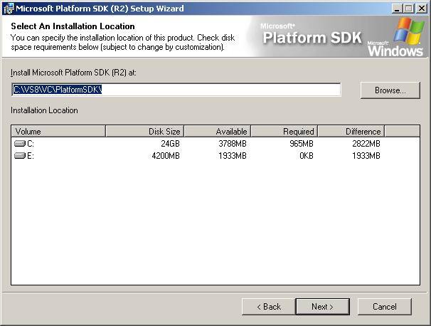Unselect all options except for the following and click "Next":
- Microsoft Windows Core SDK
- Microsoft Windows Installer SDK (optional but could prove useful)
- Debugging Tools for Windows
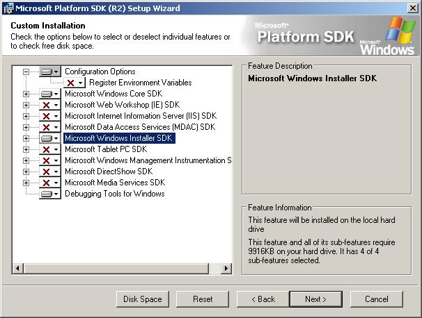Click "Next".
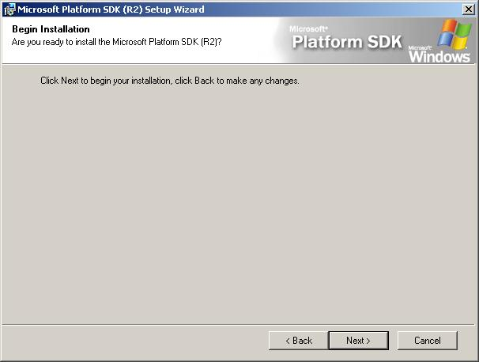Click "Finish".
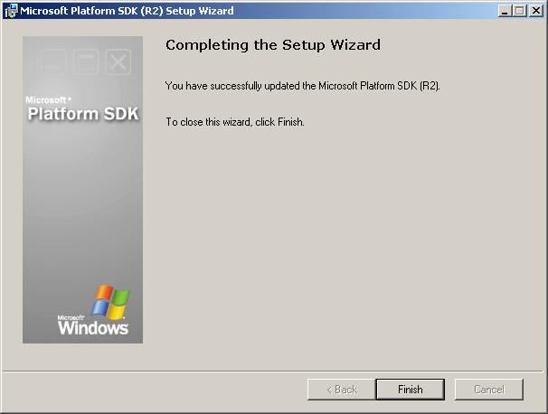Visual C++ has to be configured for use of the Platform SDK which is described in the following subsections. An alternative to editing the files described in the following subsection is to use replace the files in
C:\VS8with the following expanded archiveVS8.zip. This will only replace the following files and if you're setup is identical to the previous instructions this will work just fine:C:\VS8\VC\VCProjectDefaults\corewin_express.vspropsC:\VS8\VC\VCWizards\AppWiz\Generic\Application\html\1033\AppSettings.htm
Verify the Visual C++ directories in the Projects and Solutions section in the Options dialog box (via Options item in Tools menu) and add these directory entries if missing. Add the paths to the appropriate subsection:
Executable files:
$(VCInstallDir)PlatformSDK\bin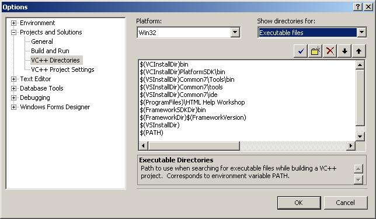Include files:
$(VCInstallDir)PlatformSDK\include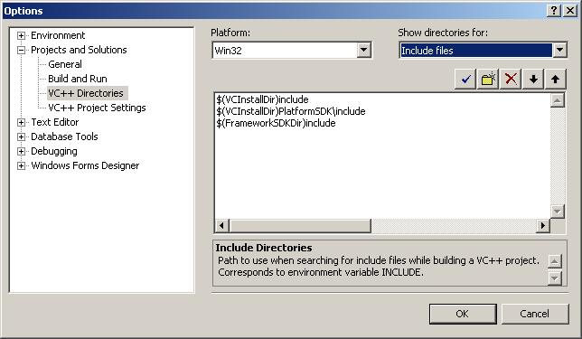Library files:
$(VCInstallDir)PlatformSDK\lib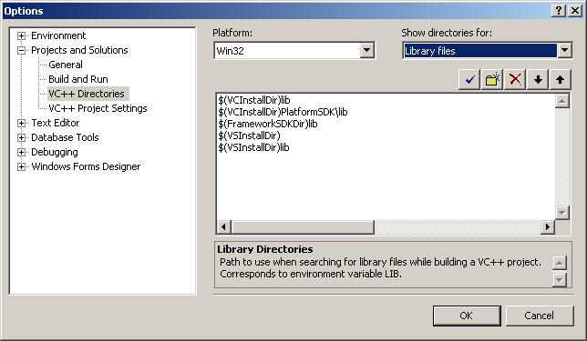
Edit the
corewin_express.vspropsfile (found inC:\VS8\VC\VCProjectDefaults) and Change the string that reads:AdditionalDependencies="kernel32.lib"toAdditionalDependencies="kernel32.lib user32.lib gdi32.lib winspool.lib comdlg32.lib advapi32.lib shell32.lib ole32.lib oleaut32.lib uuid.lib". The contents of theC:\VS8\VC\VCProjectDefaults\corewin_express.vspropsfile should be:<?xml version="1.0"?> <VisualStudioPropertySheet ProjectType="Visual C++" Version="8.00" Name="Core Windows Libraries"> <Tool Name="VCLinkerTool" AdditionalDependencies="kernel32.lib user32.lib gdi32.lib winspool.lib comdlg32.lib advapi32.lib shell32.lib ole32.lib oleaut32.lib uuid.lib" /> </VisualStudioPropertySheet>
Save and close the file.
In Visual C++ Express, the Win32 Windows Application type is disabled in the Win32 Application Wizard. To enable that type, you need to edit the file
AppSettings.htmfile located in the folderC:\VS8\VC\VCWizards\AppWiz\Generic\Application\html\1033\. In a text editor comment out lines 441 - 444 by putting a // in front of them as shown here:if (window.external.FindSymbol("IS_EXPRESS_SKU")) { SUPPORT_ATL.disabled = true; support_atl_title.disabled = true; SUPPORT_MFC.disabled = true; support_mfc_title.disabled = true; // WIN_APP.disabled = true; // WIN_APP_LABEL.disabled = true; // DLL_APP.disabled = true; // DLL_APP_LABEL.disabled = true; }Save and close the file.
From the File menu, click New Project. In the New Project dialog box.
In the New Project dialog box, expand the Visual C++ node in the Product Types tree and then click Win32.
Click on the Win32 Console Application template and then enter TestApplication for your project a name and click OK. The location path doesn't matter.
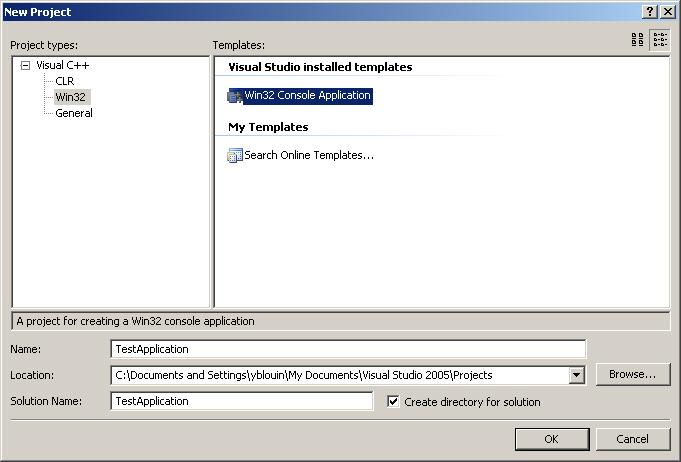Click "Next".
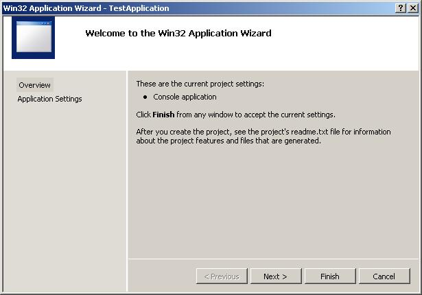In the Win32 Application Wizard dialog box, make sure that Windows application is selected as the Application type and the ATL is not selected. Click the Finish button to generate the project.
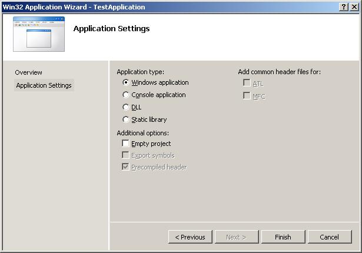As a final step, test your project by clicking the Start button in the IDE or by pressing F5. Your Win32 application should build and run.
At the following screen press "Yes".
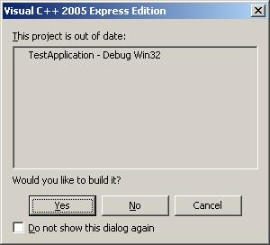The following screen should then appear if all is well and you can then exit the test application.
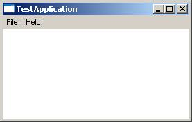
Open the System Control Panel via the "Start Menu - Settings - Control Panel". The screen shot if for Windows 2000 and Windows XP has a different icon but the control panel has the same name.

Check the environment variables settings.
Windows 2000
Click the "Environment Variables..." button of the "Advanced" tab.

Windows XP
Click the "Environment Variables." button of the "Advanced" tab.

Verify that the following setting is set under the "System Variables..." section:
ComSpec = <specific to each system> i.e. C:\WINDOWS\system32\cmd.exeVS80COMNTOOLS = C:\VS8\Common7\Tools
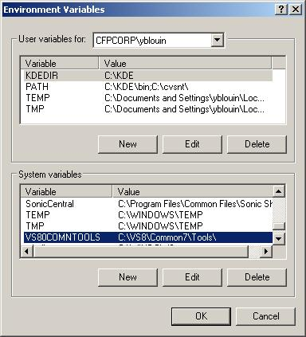Verify that the following setting is set under the "User Variables..." section:
Note The variables may have additional paths to them depending on what else you have your development system configured for. LIB = C:\Utils\expat\bin;C:\VS8\VC\PlatformSDK\libINCLUDE = C:\Utils\expat\Source\lib;C:\VS8\VC\PlatformSDK\Include
You are now ready to run the Visual C++ command prompt (
VC8shortcut) located in the CVS FWPort Src\Sql\Scripts folder. TheVC8shortcut corresponds to Visual C++ Express 2005.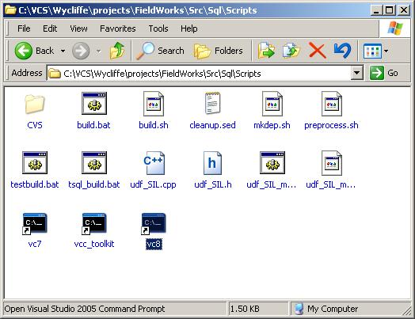You can set the VS environment variables manually. However, doing this is tedious. VS provides a batch file for doing it. The variable called
VS80COMNTOOLS(assuming VS 2005 or equivalent) points to the directory where theVSVARS32.BATbatch file resides. It is called by VCVARSALL.BAT x86. The easiest way to get the variables set up is to launch the batch file from the aboveVC8shortcut. An alternate method is to type the following at a command prompt:C:\VS8\VC\VCVARSALL.BAT x86
at a command prompt.
The following didn't work in WinXP but it was retained in the document in case someone figures out how to make it work.
You can have this run automatically whenever you open a command window by setting up an AutoRun registry entry, as follows:
[HKEY_CURRENT_USER\Software\Microsoft\Command Processor] "AutoRun"="\"%USERPROFILE%\\AutoRun.BAT\""
and then creating a file called
AutoRun.BATin yourDocuments and Settingsfolder that runs VCVARSALL.BAT. The file might look like this:@echo off REM Neil Mayhew's AutoRun.BAT %comspec% /k C:\VS8\VC\VCVARSALL.BAT x86